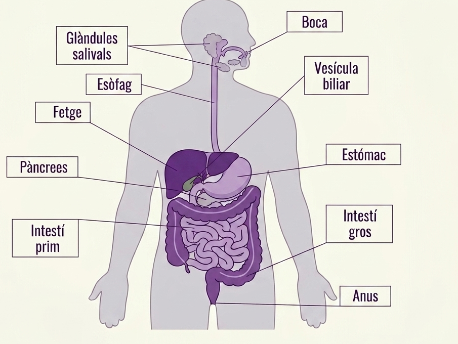

Escriu les parts del sistema digestiu que recordes. Pots començar amb aquests inicis:
El menjar viatja per un tub llarg que travessa tot el cos. Cada part d'aquest tub fa una feina diferent: unes trossegen el menjar, unes altres el desfan amb sucs, i una part molt llarga (l'intestí prim) el deixa passar cap a la sang. El diagrama numera cada part.

La fila 1 (Boca) ja està completa. Fixa-t'hi: així has d'omplir les altres.
| Ordre | Nom de l'òrgan | Funció principal |
|---|---|---|
| 1 | Boca | Masticació + amilasa salival (una substància de la saliva) |
| 2 | Àcid + pepsina: desfan el menjar → es diu "quimo" | |
| 3 | Aquí passen els nutrients cap a la sang | |
| 4 | Absorbeix l'aigua que queda · hi viu la microbiota |
Aquestes 6 parts són tot el camí que fa el menjar, de l'entrada a la sortida, però estan desordenades. Escriu 1, 2, 3, 4, 5 i 6 al davant de cadascuna:
| Intestí gros | |
| Boca | |
| Anus | |
| Estómac | |
| Esòfag (el tub que baixa des de la boca) | |
| Intestí prim |
L'esòfag i l'anus no surten al dibuix de dalt: l'esòfag va just després de la boca i l'anus és el final de tot.
Per passar d'una longitud real a la mida del cabdell de llana cal fer dos passos, un darrere l'altre. Pas 1: redueixo l'escala dividint entre 100 (moc la coma 2 posicions cap a l'esquerra). Pas 2: com que el resultat és molt petit, el passo de cm a mm multiplicant per 10 (moc la coma 1 posició cap a la dreta).
Pista: fixa't en com s'ha mogut la coma a l'exemple de l'esòfag i fes exactament el mateix moviment.
A cada part del tub digestiu s'afegeixen substàncies diferents que van desfent el menjar una mica més. La fila de la Boca ja està feta com a exemple, amb l'observació ja escrita: fixa-t'hi per completar la resta. A "La teva observació" escriu, en poques paraules, què li passa al menjar en aquella fase.
Pista Estómac: l'àcid i la pepsina desfan sobretot les proteïnes (com la carn o l'ou). Pista Intestí prim: les vellositats deixen passar més quantitat de nutrients cap a la sang.
A part del tub, hi ha dos òrgans que hi aboquen líquids per ajudar. El fetge fabrica la bilis, que trenca el greix en gotetes petites perquè es pugui desfer millor (com el sabó amb l'oli d'una paella). El pàncrees hi aboca el bicarbonat, que treu l'àcid que ve de l'estómac perquè no cremi l'intestí.
| Fase | Substàncies | Funció | La teva observació |
|---|---|---|---|
| Boca | Amilasa salival + masticació | Midó (un sucre molt llarg) → maltosa (un sucre curt) | Exemple: "El midó del pa comença a fer-se sucre." |
| Estómac | Àcid (HCl) + pepsina | ||
| Duodè | Bicarbonat (pàncrees) + bilis (fetge) | Neutralitza l'àcid; ajuda a desfer els greixos | |
| Intestí prim | Paret amb vellositats (com pèls petits) |
Quan la glucosa (un sucre del pa) travessa la paret de l'intestí prim, entra a la sang. La sang la porta fins a totes les cèl·lules del cos. Dins de cada cèl·lula hi ha uns orgànuls molt petits, els mitocondris, que ajunten la glucosa amb l'oxigen i n'obtenen energia. Aquesta energia és la que fa que els músculs es puguin moure.
Ordena el recorregut. Escriu 1, 2, 3, 4 dins de cada quadre segons l'ordre en què passa (el 4 ja hi és):
| Ordre | Què passa |
|---|---|
| La sang porta la glucosa fins al múscul de la cama | |
| La glucosa travessa la paret de l'intestí prim i entra a la sang | |
| Mastego el pa i comença a fer-se glucosa | |
| 4 | El mitocondri fa servir la glucosa i l'oxigen per donar energia |
La Mercè surt a córrer i no ha dinat. Per quina raó li costa tant moure les cames?
Fixa't en el pas 4 del quadre de dalt: què li falta al mitocondri?
Ajuden a digerir la fibra, produir vitamines i protegir-nos d'altres bacteris que ens fan mal.
Per quina raó prendre antibiòtics pot provocar diarrea?
Pista: els antibiòtics maten bacteris… i a l'intestí n'hi ha de beneficiosos.
Els metges observen la forma de la femta per saber com va l'intestí. El tipus 3-4 és normal. El tipus 1-2 (boletes dures) vol dir poca fibra o poca aigua. El tipus 6-7 (líquida) vol dir diarrea.
Mira bé els dibuixos i els números. Després resol els tres casos que trobaràs a sota: allà hauràs de decidir tu quin tipus li tocaria a cada persona.
Per a cada persona, escriu quin tipus de Bristol esperaries i per quina raó:
| Cas | Tipus esperat | Per quina raó |
|---|---|---|
| La Mercè fa una setmana que quasi no beu aigua i menja poca verdura | ||
| En Youssef ha passat tot el cap de setmana amb un virus intestinal | ||
| L'Aya menja fruita, verdura i llegums cada dia i beu 1,5 L d'aigua |
Avui en dia, un experiment així només és acceptable si el pacient hi consent lliurement: li han explicat bé què se li farà i pot dir que no en qualsevol moment (és el que en diem consentiment informat).
Creus que Alexis St. Martin va poder dir que no lliurement, tenint en compte que depenia econòmicament de Beaumont? Per quina raó?
Observa la teva femta i memoritza a quin tipus de l'escala de Bristol s'assembla (no cal escriure-ho). A classe ho respondràs de manera anònima.
És una observació personal: no es pot fer amb cap IA.